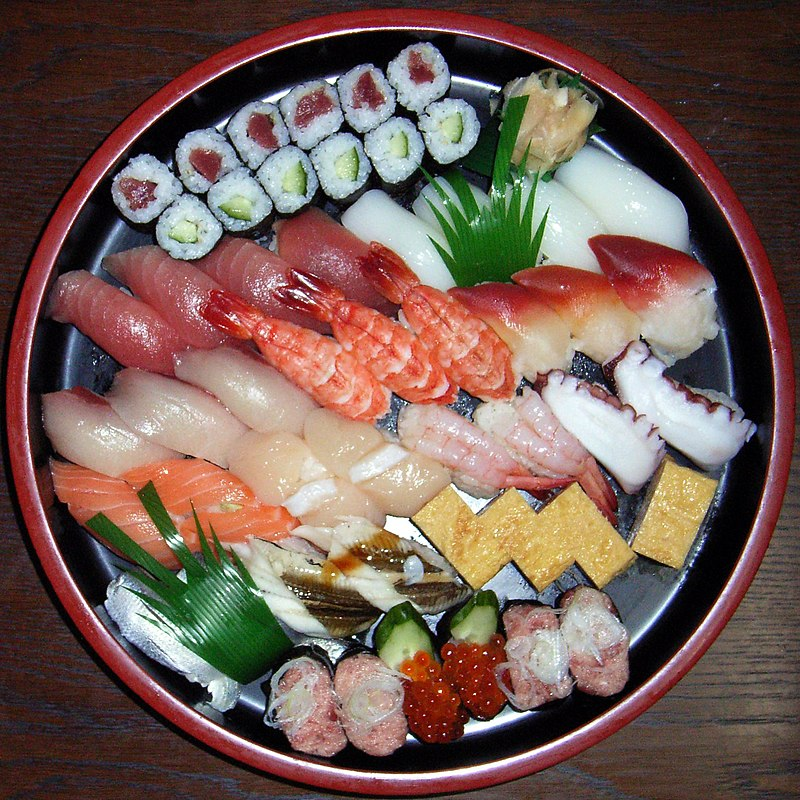
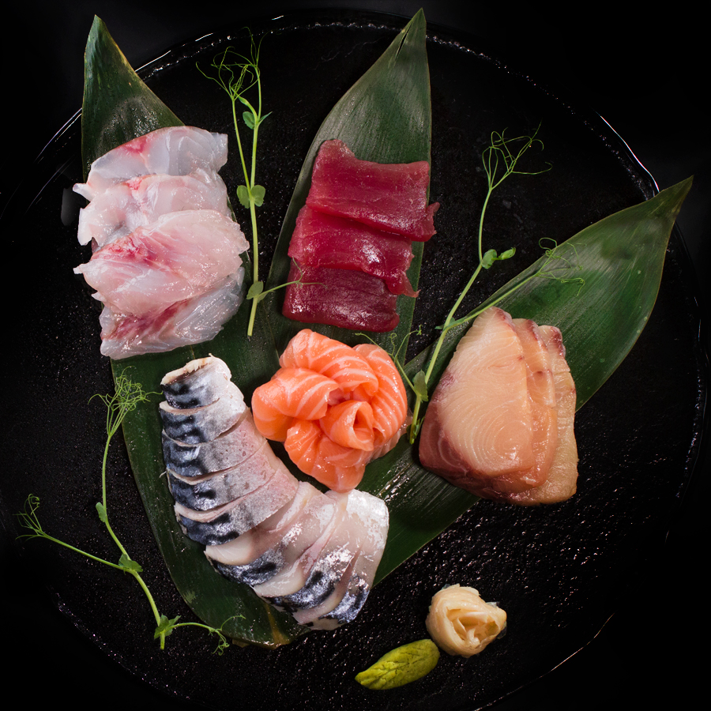
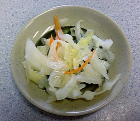
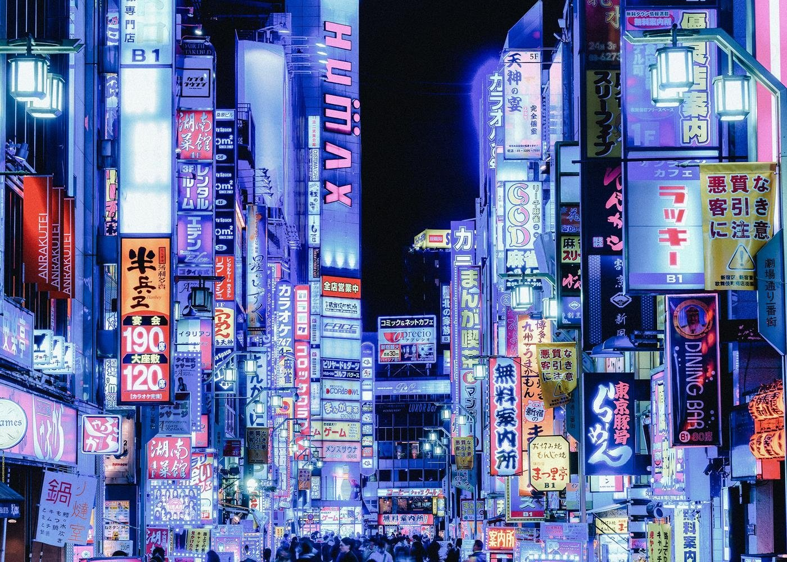
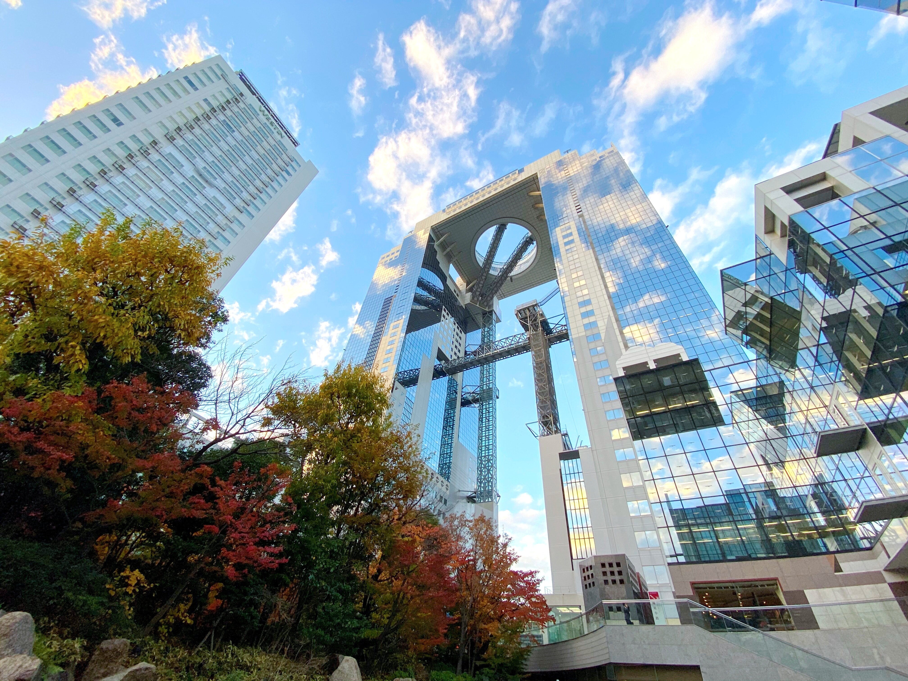

Моето мечтано пътуване до Япония!

С какво ще пътуваш?
Със самолет.

С кого ще пътуваш или искаш да си сам?
Ще пътувам със своите приятели
- Йони
- Маги

- Ели
- Елена

Какви животни и растения ще видиш?
Ще видя растенията:
- Японска роза

- Бонсай дърво

- Бамбук

- Глициния

Ще видя растенията:
- Тануки

- Пъстър елен

- Зелен фазан

- Гигантски саламандър

Каква храна ще ядеш?
- Суши

- Сашими

- Удон

- Кайсеки

- Цукемоно

- Мисо супа

С какви хора ще се запознаеш?
Ще се запозная с много хора, от различни култури
Какви забележителности ще посетиш?
Токио

- Umeda Sky Building

- Парка Yamashita

- Gassho-zukuri